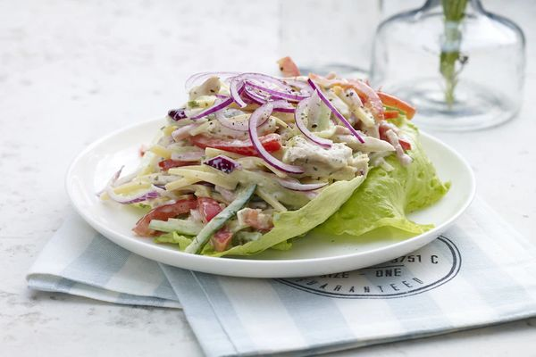

Sałatka Szefa

Przygotowanie krok po kroku
Krok 1
Sałatę porwij na mniejsze kawałki. Wszystkie warzywa oraz ser i szynkę pokrój w cienkie słupki, tzw. Julienne.
Krok 2
W miseczce połącz sos sałatkowy Knorr z ketchupem i majonezem.
Krok 3
W dużej misce połącz wszystkie składniki sałatki. Dodaj przygotowany sos i wszystko razem delikatnie wymieszaj. Sałatkę przełóż do salaterki, podawaj.
Potrzebne składniki
- (0.25 szt) sałata lodowa
- (1 opakowanie) sos sałatkowy czosnkowy
- (1 sztuka) grillowana pierś z kurczaka
- (50 gram) szynka konserwowa
- (50 gram) ser żółty
- (1 sztuka) papryka czerwona
- (1 sztuka) cebula czerwona
- (0,25 sztuki) ogórek świeży
- (3 łyżki) majonez
- (3 łyżki) ketchup